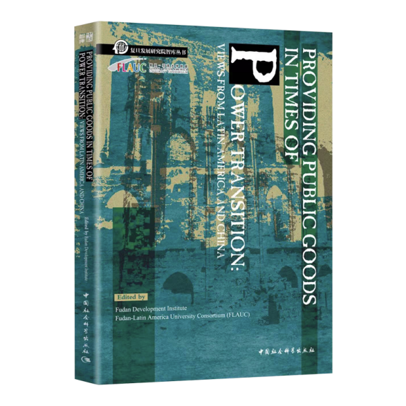
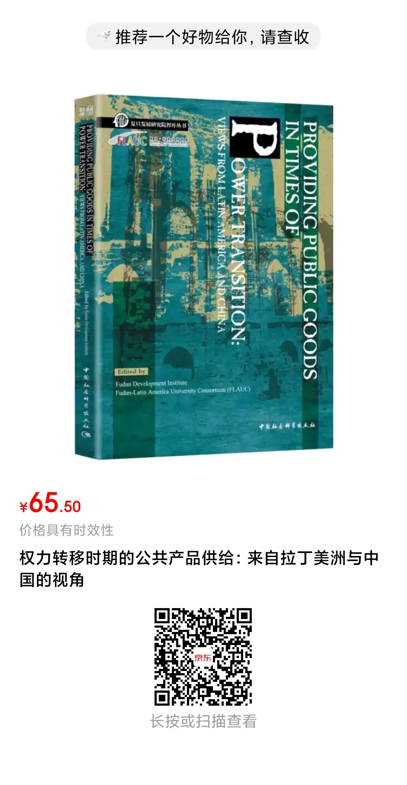

收录于合集


新书简介

Providing Public Goods in Times of Power Transition: Views from Latin America and China（《权力转移时期的公共产品供给：来自拉丁美洲与中国的视角》）
作者： 邓皓琛，复旦大学国际关系与公共事务学院助理教授；Nicole Jenne，智利天主教大学政治科学研究所助理教授和亚洲研究中心（CEAUC）研究员。
出版社：中国社会科学出版社
出版时间：2020年12月
定价：65.5元
基本信息
冷战结束后的三十年改变了国际体系的两极结构。世界各国普遍认为西方秩序，即所谓的“自由秩序”正深陷危机。本书探讨了随着自由世界秩序的衰落，全球治理会如何发生多方面的转变？国际力量格局正在因为美国实力衰落而发生何种转变，以及这种转变对国际公共产品的供给有何意味？谁是在金融稳定、安全、环境、人权、健康等政策领域提供国际公共产品的行动者？各国使用何种制度和法律体系来调控公共产品供给？自由民主危机如何影响全球治理？本书各章节从中国、拉丁美洲、中国—拉丁美洲三个维度来考察不同的政策领域，从文化、国际关系、金融和管理等不同学科背景回应上述问题。
章节介绍
第一章，基于哲学见解下的“南北关系与拉丁美洲的现代性含义”，由哥伦比亚罗萨里奥大学副教授Jochen Kleinschmidt撰写。不同地区的人士同时提出了现代性这一问题。本文之所以提到中国，正是因为中国这一非西方大国正逐步建立和巩固与拉丁美洲的关系，由此正削弱美国作为西方超级大国翘楚的长期统治地位。Kleinschmidt的论述聚焦三种不同的思维遗产传统，这三种传统汇聚融合，形成了我们熟知的混血文化（mestizaje）。正是这种混合品质塑造了近代以来的拉美人民思想。在分析拉丁美洲在过去两个世纪展现的现代性时，读者应考虑到这些维度。
第二章由复旦大学美国研究中心教授刘永涛撰写，有关于如今广泛使用的两个术语——“人文交流和全球公共产品”。中拉人民要分享全球视野，因此有限的经济与贸易交流尚待拓展。正是意识到这一常规做法，刘永涛将读者引向了更加丰富的视野：民众之间可以建立联系，从而建构公共产品。在其文章中，刘永涛使用公共图书馆的实例来解释何为公共产品：“一旦公共图书馆建成，任何人均可使用（非排他性），并且任何一位读者的使用并不会耗尽整座图书馆的资源。其他读者仍可使用这些资源（非竞争性）”。
第三章由哥伦比亚罗萨里奥大学商学院副教授Juana Garcia Duque和经济学院研究助理Juan Pablo Casadiego Guevara共同撰写，关于“拉美和加勒比地区是中国国际发展合作新伙伴”，与第四章“中拉关系”前后呼应。Duque和Guevara聚焦伊比利亚—美洲南南双边合作，借此将他们的分析纳入国际发展合作领域。本文为中国与拉美和加勒比地区的未来合作给出了一些建议，强调了一些不容忽视的问题，同时也为全球治理的所有关注者提供了适当的提醒。
第四章作者是阿根廷拉美社会科学院（FLACSO）中国研究助理研究员Juliana Gonzalez Jauregui。她以“中拉合作新阶段：‘一带一路’倡议项目对未来道路的影响”为题，广泛谈论了中拉合作。在Jauregui看来，拉丁美洲的加入可被描述为海上丝绸之路的“自然延伸”，这在很大程度上解释了巴拿马、乌拉圭、厄瓜多尔等多国加入“一带一路”倡议的原因，尽管还有些国家仍处于这一框架之外。
第五章由智利天主教大学政治学院助理教授Nicole Jenne和德国全球和区域研究所研究员Christian Wirth合著，以“不进不退：地区主义和美国在东亚国际新秩序斗争中的矛盾角色”为题，讨论美国在东亚地区秩序中的作用。作者认为，在中枢辐射式体系中，东亚各条辐射带汇聚于美国中枢。但是这一体系无法适应冷战后的现实情况，进而不能满足包括中国在内的东亚国家的各项需要。华盛顿维持这一秩序的努力反而加剧了该地区的紧张局势。作者认为，包括美国在内的多边论坛最符合该地区各国的利益，因此应该受到东亚各国以及日渐衰落的美国霸权的同等支持。
在第六章“全球公共产品与象征性不平等：用国际援助为全球公共产品（GPG）融资的困境”中，墨西哥蒙特雷科技大学国际关系与政府学院教授Marta Ochman解释道，公共产品理论源于20世纪50年代，旨在将国家对市场的干预合法化，以此为国民谋幸福。然而，与国家领域相对，权威在国际体系中要分散得多。国际社会期望大国和更富裕的国家在提供公共产品时做出更大贡献，但这些国家的此番作为会有何代价？自从两极世界结构结束，国际责任分配变得更为复杂，新兴力量正在崛起，比如中国。这些力量在何种程度上有能力并且愿意介入并提供公共产品？并以何种形式来提供公共产品？现在正好是一个恰当的时机，让本书作者就不断变化的国际格局如何影响全球治理的问题给出一些答案。
第七章关于“腐败和公共产品供给”，由哥伦比亚安第斯大学经济学学者Richard Kalil和经济学院副教授Andres Zambrano撰写。作者审查了哥伦比亚腐败案例的影响，借此讨论公共产品供给问题。偏离宏观层面，读者会在微观层面发现一份强调强大制度重要性的详细分析。
本卷供稿来自复旦- 拉美大学联盟（FLAUC）。该联盟是复旦大学与拉美6国13所最负盛名的大学交流合作的平台。联盟反映出中拉关系的不同阶段，其特点是双方都试图扩大合作并且“增进相互了解”。我们需要铭记：在本世纪初以前，中华人民共和国与拉美国家政府间官方交流大多零星发生。即便在19世纪末双方建立正式关系后，中拉交往也基本局限于非国家行为体。但是，在不到10年中，中国的经济增长加上“走出去”政策，使其从一个遥远国度转变为拉美第二大贸易伙伴。2017年，在北京举行的“一带一路”国际合作高峰论坛将拉丁美洲宣布为“21世纪海上丝绸之路的自然延伸”。在2018年，中国国家主席习近平首次宣布“一带一路”倡议（BRI）五年之后，该倡议到达拉丁美洲。为了让拉美国家参与共建“一带一路”，以此来造福双方人民，这一合作进程需要海纳百川，包容各方。复旦- 拉美大学联盟希望像本书反映的那样，借助举办持续且开放的学术对话，为这一新阶段做出贡献。
编者信息
复旦发展研究院成立于1993年，是改革开放以来国内最早设立的智库之一，也是“中国十大影响力智库”、“首批上海市重点智库”。研究院聚焦“中国发展研究”，是一家以“学科深度融合”为动力、以“统筹管理孵化”为延伸，以“高端学术运营”为特征的跨学科、综合性、国际化研究机构。研究院充分发挥复旦大学文理医工学科综合优势和国内外的影响力，“开放办智库”，形成“复旦- 上海-中国-世界”多维研究网络，孵化培育了20个研究中心，国内首创海外中国研究中心、国际智库中心、复旦- 拉美大学联盟、金砖国家大学联盟，形成全方位、多渠道的国际合作网络，为国家发展、人类进步贡献复旦学养，提出中国方案，回应世界关切。本书作者团队来自复旦- 拉美大学联盟（FLAUC），是复旦大学与6个拉美国家的13所最负盛名的大学间交流、沟通与合作的平台。
（本文翻译：戴赟，国政学人编译员，外交学院国际关系研究所硕士研究生）

中文版信 息
（预计2021年年底出版）
【编者】复旦大学发展研究院
【译者】国政学人，肇始于2011年人人网国关小站，2014年成立国关前沿通讯，2017年成立国政学人，是中国国际关系与政治学学界知名学术平台，专注专业领域的知识传播与学术研究事业。目前，国政学人以高质量外文编译为特色，并成长为中国国际关系学界规模与影响力最大的编译平台，累计关注达数十万人。本书译者团队来自国政学人共同体。
【出版】中国社会科学出版社